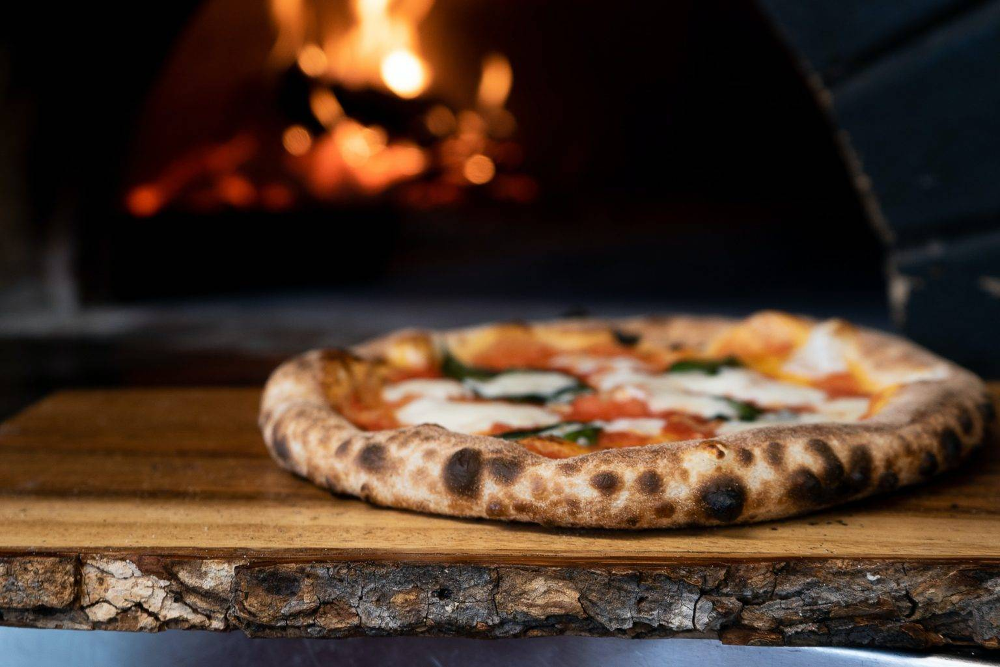

Authentic Neapolitan Margherita Pizza Recipe
Neapolitan Margherita pizza is a classic Italian dish celebrated for its simplicity and authentic flavors. Originating from Naples, Italy, this pizza is made with a soft, chewy crust, San Marzano tomato sauce, fresh mozzarella, basil leaves, and a drizzle of olive oil. The dough uses minimal ingredients—flour, water, yeast, and salt—but requires careful preparation and patience. It is traditionally cooked in a wood-fired oven at high temperatures, resulting in a lightly charred, airy crust. The sauce is kept raw, allowing the natural sweetness of the tomatoes to shine through, while the mozzarella adds a creamy texture. This recipe preserves the essence of traditional Neapolitan pizza, offering an authentic and flavorful experience that celebrates Italian culinary heritage.
Ingredients
- 500 ml water
- 1½ grams fresh yeast
- 800 grams Italian double zero "00" flour
- 25 grams salt
- 10 grams sugar (if baking in a regular oven)
- 25 grams olive oil (if baking in a regular oven)
- Sauce:
- San Marzano tomatoes
- Salt & pepper
- Extra virgin olive oil/li>
- Toppings:
- 25 grams "Fior di latte" mozzarella
- 4 fresh basil leaves
- Extra virgin olive oil, to taste
Instructions
- In a large container, mix water and salt. Add a spoonful of flour and stir to dissolve the salt, which helps protect the yeast.
- Mix the yeast with a small amount of flour and crumble it with your fingers, then add it to the water mixture.
- Add the remaining flour gradually and mix until a dough forms.
- Transfer the dough to a floured surface, split it into portions, and knead each piece for 15 to 20 minutes until the texture becomes silky and fluffy.
- If using a regular oven, add sugar and olive oil to the dough during kneading.
- Return the dough to the container, dust with flour, cover, and let it rest for 45 to 60 minutes.
- Portion the dough into 280-gram pieces, shape into balls, place them on a floured tray, cover with plastic wrap, and let rest for 6 to 8 hours.
- Preheat your oven to 800-890°F (if using a pizza oven).
- Stretch the dough on a floured surface, pressing from the center outward to maintain a thicker border.
- Prepare the sauce by hand-crushing San Marzano tomatoes and seasoning with salt, pepper, and olive oil.
- Cut the mozzarella into thin strips or oval slices if using mozzarella di bufala.
- If using a peel, flour it, place the dough on it, and add toppings: a ladle of tomato sauce, mozzarella strips, basil leaves, and a drizzle of olive oil.
- Slide the pizza into the oven and bake for 60 to 90 seconds, rotating it after 30 to 40 seconds for even cooking.
- Once done, remove the pizza and serve immediately.
Source: lacooquette.com